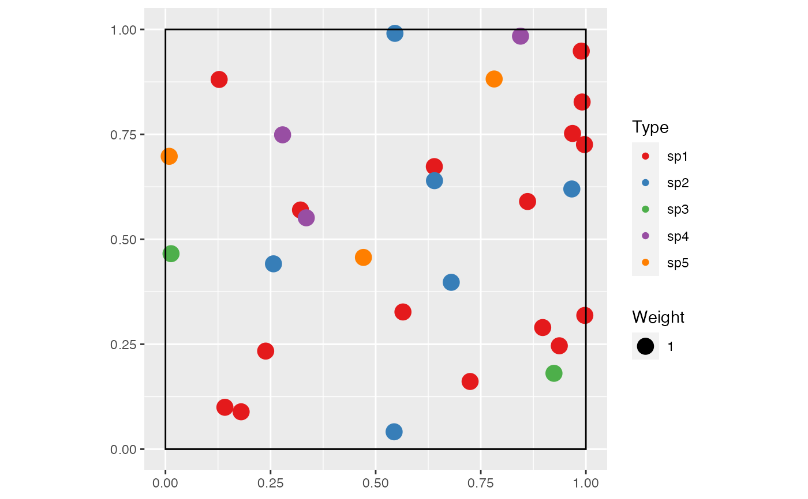

This function extends rCommunity by spatializing the randomized community.
rSpCommunity(
n,
size = sum(NorP),
NorP = 1,
BootstrapMethod = "Chao2015",
S = 300,
Distribution = "lnorm",
sd = 1,
prob = 0.1,
alpha = 40,
Spatial = "Binomial",
scale = 0.2,
mu = 10,
win = spatstat.geom::owin(),
Species = NULL,
Sizes = "Uniform",
MinSize = 1,
MaxSize = 1,
Wscale = 20,
shape = 2,
CheckArguments = TRUE
)The number of communities to draw.
The number of individuals to draw in each community.
A numeric vector or a two-column matrix. Contains either abundances or probabilities. Two-column matrices should contain the observed abundances (or probabilities) in the first column and the expected ones in the second column, to allow using beta diversity functions.
The method used to obtain the probabilities to generate bootstrapped communities
from observed abundances.
If "Marcon", the probabilities are simply the abundances divided by the total number of individuals (Marcon et al. 2012)
.
If "Chao2013" or "Chao2015" (by default), a more sophisticated approach is used (see as.ProbaVector)
following Chao et al. (2013)
or Chao and Jost (2015)
.
The number of species.
The distribution of species frequencies.
May be "lnorm" (log-normal), "lseries" (log-series), "geom" (geometric) or "bstick" (broken stick).
The simulated distribution standard deviation. For the log-normal distribution, this is the standard deviation on the log scale.
The probability of success in each trial.
Fisher's alpha.
The spatial distribution of points.
May be "Binomial" (a completely random point pattern except for its fixed number of points) or
"Thomas" for a clustered point pattern with parameters scale and mu.
In Thomas point patterns, the standard deviation of random displacement (along each coordinate axis) of a point from its cluster center.
In Thomas point patterns, the mean number of points per cluster.
The intensity of the Poisson process of cluster centers is calculated as the number of points (size) per area divided by mu.
The window containing the point pattern. It is an owin object.
A vector of characters or of factors containing the possible species.
The distribution of point sizes.
May be "Uniform" for a uniform distribution between MinSize and MaxSize.
By default, all sizes are 1.
May be "Weibull" with parameters MinSize, Wscale and shape.
The minimum size in a uniform or Weibull distribution.
The maximum size in a uniform distribution.
The scale parameter in a Weibull distribution.
The shape parameter in a Weibull distribution.
If TRUE (default), the function arguments are verified. Should be set to FALSE to save time in simulations for example, when the arguments have been checked elsewhere.
A wmppp.object, with PointType values as species names if n=1.
An object of class "SpCommunities", which is a list of wmppp.objects, is returned if n>1.
Chao A, Jost L (2015).
“Estimating Diversity and Entropy Profiles via Discovery Rates of New Species.”
Methods in Ecology and Evolution, 6(8), 873--882.
doi: 10.1111/2041-210X.12349
.
Chao A, Wang Y, Jost L (2013).
“Entropy and the Species Accumulation Curve: A Novel Entropy Estimator via Discovery Rates of New Species.”
Methods in Ecology and Evolution, 4(11), 1091--1100.
doi: 10.1111/2041-210x.12108
.
Marcon E, Hérault B, Baraloto C, Lang G (2012).
“The Decomposition of Shannon's Entropy and a Confidence Interval for Beta Diversity.”
Oikos, 121(4), 516--522.
doi: 10.1111/j.1600-0706.2011.19267.x
.
spCommunity <- rSpCommunity(1, size=30, S=5)
autoplot(spCommunity)
